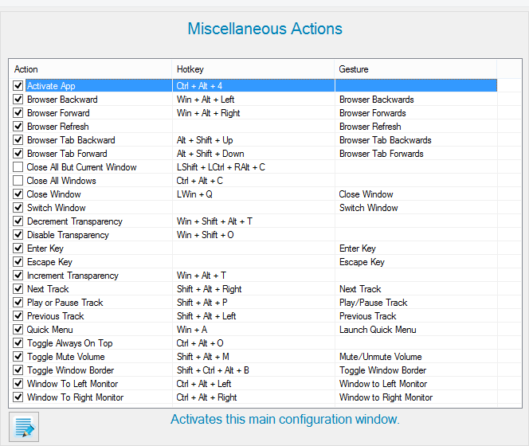

This particular section contains miscellaneous window actions such as: Quick Menu, window to left/right monitor, track seeking, volume adjustment, browser actions, etc. Actions are explained in further detail through the help description.
